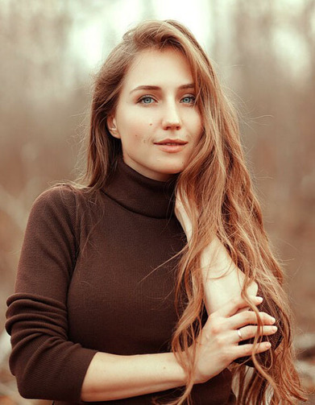

<!--Intro-->

<div class="container intro__container">
    <div class="row">
        <div class="col-md-4">
            <div class="intro__image">
                
            </div>
        </div>
        <div class="col-md-8">
            <div class="intro__text">
                <span>" <b>Давайте знакомиться!</b> Я, Виктория Пашкевич - фотограф на Таинства крещения и венчания,
                семейный и детский фотограф. Закончила филологический факультет БГУ, по образованию
                    учитель русского языка и литературы.</span><br>
                <span><b>В декретном отпуске</b> особенно ощутила, как быстро меняется ребенок и как важно на фотографиях
                сохранять эти бесценные моменты! Прошла обучение художественной фотографии у Дарьи Степановой,
                сменила технику на профессиональную, обучилась съёмкам крещения, венчания и богослужений
                у Ольги Папиной – и для меня и моих героев открылся потрясающий мир профессиональной фотографии!</span><br>
                <span><b>Самая большая ценность</b> в моей жизни – семья, муж и сын. Это моя поддержка, опора и вдохновение.
                И я стремлюсь в общении с героями съёмок делать всё, как для своих близких и ставя себя на Ваше
                    место.</span><br>
                <span><b>Именно поэтому</b> у меня нет почасовой оплаты – снимаем до результата, время съёмки устанавливаете Вы,
                малыш не в настроении – встретимся ещё раз! Вам сложно дойти до печатного центра – помогу распечатать
                стопки Ваших фотографий. Кроме того, результат каждой съёмки – фотокнига. Множество вопросов по подбору
                одежду, по подготовке к венчанию или крещению – с радостью проконсультирую!
                    Давайте вместе сохраним тепло бесценных моментов в Вашей семье! "</span><br>
            </div>
            <div class="intro__social">
                <div class="intro__social__vk">
                    <i class="fa fa-vk fa-2x" aria-hidden="true"></i>
                </div>
                <div class="intro__social__instagram">
                    <i class="fa fa-instagram fa-2x" aria-hidden="true"></i>
                </div>
                <div class="intro__social__facebook">
                    <i class="fa fa-facebook fa-2x" aria-hidden="true"></i>
                </div>
                <div class="intro__social__telegram">
                    <i class="fa fa-telegram fa-2x" aria-hidden="true"></i>
                </div>
                <div class="intro__social__whatsapp">
                    <i class="fa fa-whatsapp fa-2x" aria-hidden="true"></i>
                </div>
            </div>
        </div>
    </div>
</div>
